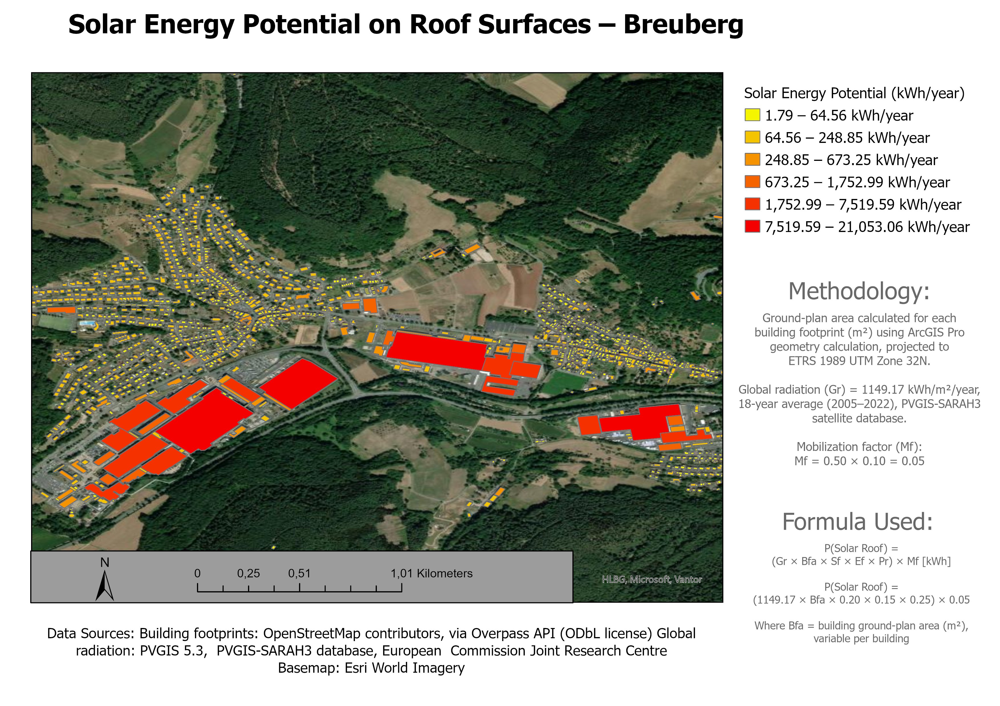

Solar Energy Potential on Roof Surfaces
Breuberg, Hesse

// overview
This analysis estimates the technical solar photovoltaic potential of building rooftops across the municipality of Breuberg and its surrounding villages, including a detailed close-up of the Sandbach neighborhood.
Building footprints were sourced from OpenStreetMap and reprojected to ETRS 1989 UTM Zone 32N for accurate area calculation. Each building's ground-plan area was computed directly in ArcGIS Pro and used as the basis for a standard solar yield formula, incorporating a location-specific global radiation value of 1,149.17 kWh/m²/year derived from an 18-year average (2005–2022) using the PVGIS-SARAH3 satellite radiation database, alongside efficiency, performance ratio, and mobilization factors reflecting realistic rooftop solar deployment assumptions.
// key finding
The results highlight a clear spatial pattern: large industrial and commercial rooftops, particularly in the Sandbach area, account for a disproportionate share of the total technical potential, while smaller residential buildings contribute modestly but consistently across the settlement footprint.
This distinction is useful for prioritizing where rooftop solar incentive programs or municipal energy planning efforts could have the greatest near-term impact.
// methodology
- Building footprints acquired from OpenStreetMap via the Overpass API (ODbL license)
- Reprojected to ETRS 1989 UTM Zone 32N, ground-plan area calculated per footprint in ArcGIS Pro geometry calculation
- Global radiation of 1,149.17 kWh/m²/year (18-year average, 2005–2022) from the PVGIS-SARAH3 satellite database
- Per-building yield modelled with a formula-driven attribute calculation, including efficiency, performance ratio, and a mobilization factor
= (1149.17 × Bfa × 0.20 × 0.15 × 0.25) × 0.05
where Bfa = building ground-plan area (m²), Mf = 0.50 × 0.10 = 0.05
// skills demonstrated
- Spatial data acquisition via API services (Overpass)
- Coordinate reprojection and accurate area calculation
- Field calculation and geometry analysis
- Formula-driven attribute modeling
- Cartographic layout design
// tech stack
// data sources
- Building footprints: OpenStreetMap contributors, via Overpass API (ODbL license)
- Global radiation: PVGIS 5.3, PVGIS-SARAH3 database, European Commission Joint Research Centre
- Basemap: Esri World Imagery